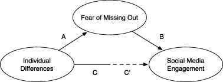

Social Networking Sites: 
Social media apps such as Instagram and TikTok are undoubtedly one of the main reasons teens have such low self-esteem issues nowadays. However, according to verywellmind, Fomo actually increases the use of social media, creating this never-ending loop of negativity.
Depression and anxiety are also factors that trigger even more social media use, and thus increase FOMO-induced stress.
Computers in Human Behavior
The results of this study showed that FOMO was present for participants throughout the day, but mostly later in the day and near the end of the week (TGIF, am I right?!).
People whose behaviors felt more like personal obligations, including studying or working, were more likely to report greater FOMO. It was also associated with the predicted negative outcomes, such as fatigue, stress, sleep problems, and psychosomatic symptoms. Curiously enough, when it came to the personal findings, FOMO was not predicted by neuroticism or extraversion. It’s felt by all regardless of temperament.
Furthermore,FOMO poses a potential risk to our lives.
Published in Computers and Human Behavior.First, it related to a lower sense of having one's needs as well as a lower feeling of life satisfaction in general. As other studies have suggested, it appears that FOMO is linked to both feeling a need to engage in social media and increasing engagement. In summary,FOMO and social media habits may contribute to another negative, self-perpetuating cycle.
What's more,aside from increasing unhappiness, fear of missing out also leads to greater involvement in unhealthy behaviors. For example, the study in Computers and Human Behavior found that FOMO was associated with distracted driving, which in some cases may cause death.
Common question on FOMO
Does FOMO only occur in teenagers?
Well, FOMO can be experienced by people of all ages.One study in the Psychiatry Research journal found that it was linked to greater smartphone and social media usage and wasn’t associated with age or gender.
Also,both social media and smartphone use are related to fears of negative and even positive evaluations by others ,as well as connected with negative effects on mood.
Like a recent study published in Motivation and Emotion, scientists at Carleton and McGill University examined the social-psychological basis of FOMO. They wanted to see how it affected first-year university students, predicting it would be associated with a host of negative outcomes related to stress and negative emotionality. Further, the scientists predicted that students who experienced FOMO would be more likely to miss out on sleep and experience more fatigue.
How the researchers did the experiment
First-year university students with smartphones completed a diary for 7 days. They received five alerts throughout the day with a link to a survey which asked them about their present experiences. At the end of the semester, the students were asked to complete an online questionnaire that focused on well-being and life satisfaction.